Charleston Capitol Building
チャールストン議事堂ビル
概要
チャールストン議事堂ビルは、アパラチアのチャールストン市内に位置するロケーションです。
ウェストバージニア州議会の中枢として機能し、大戦後はチャールストン緊急政府の本拠地となりました。
複数のクエスト（Key to the Past、Recruitment Blues、Overseer's Mission等）の舞台であり、裁判所と車両管理部（DMV）が併設されています。
現実のウェストバージニア州議事堂 🏛️
ゲーム内の議事堂ビルのモデルとなったのは、チャールストンに実在するウェストバージニア州議事堂（West Virginia State Capitol）です。
著名な建築家キャス・ギルバート（合衆国最高裁判所ビルも設計）による新古典主義様式の建物で、1924年に着工、1932年に完成しました。
最大の特徴は高さ約89メートル（292フィート）の金箔ドームで、合衆国議事堂のドームよりも約1.5メートル（5フィート）高いことで知られています。
内部にはバーモント産大理石が壁面に、イタリア産大理石が床に使用され、ドームからは重さ約2トン、直径約2.4メートルのクリスタルシャンデリアが吊り下がっています。
建設費は約1,000万ドル。延床面積約49,700㎡に333の部屋を持つ壮大な建物です。
ウェストバージニアの州都は何度か移転しており、1863年にはウィーリング、1870年にチャールストン、1875年に再びウィーリングを経て、1877年の州民投票で最終的にチャールストンが恒久的な州都に選ばれました。
最初のチャールストン議事堂は1885年に完成しましたが1921年に火災で焼失。仮設の「ペーパーボード議事堂」も1927年に焼失し、現在の建物が建設されました。
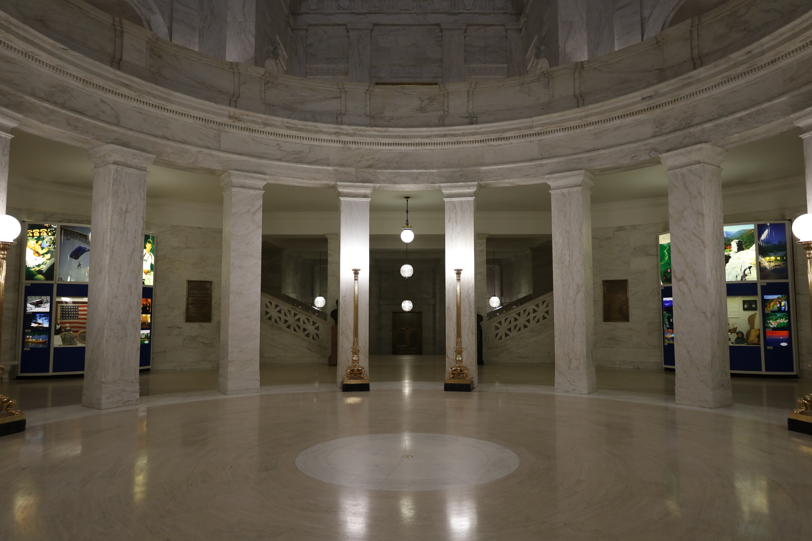
背景
州議事堂ビルは、アパラチア準州の政治的権力の座として機能していました。
建物は大戦を無傷で生き延び、直後にはウェストバージニア州議会の生存者たちがチャールストン緊急政府を結成しました。
この組織は下院議長アビゲイル・プールを長とする暫定評議会の下、議事堂ビルに本拠地を置きました。
当初はワシントンD.C.からの指示を待っていましたが、連絡が来なかったため自律的に運営を開始。
2082年までに、チャールストン緊急政府はレスポンダーと同盟を結び、ブラザーフッド・オブ・スティール、フリーステイツ、そしてレイダーとの平和的関係の構築も試みました。
しかし同年のクリスマスの日、サマーズヴィル・ダムの破壊によるクリスマス洪水がチャールストンを壊滅させました。
議事堂ビル本体はアクセス可能な状態を保ちましたが、正面入口は泥と瓦礫で塞がれています。

レイアウト
議事堂ビルはチャールストン廃墟の最東端に位置しています。
サマーズヴィル・ダムの崩壊による洪水で泥と瓦礫が中央広場を埋め、正面入口を塞いでいます。
正面にはウェストバージニアの自由の鐘があり、レスポンダーのエンブレムが付けられています。
地下には浸水した発電室があり、武器作業台が設置されています。
裁判所とDMV（車両管理部）は地上の別々のドアからアクセスでき、地下でも繋がっています。
議事堂の西端にはアパラチア準州知事のオフィスがあり、テレビ出演用の記者会見室も完備しています。
ロタンダの手前には知事の執務室がありますが、洪水の波がトラックを壁に叩きつけたため、今は泥とゴミで埋まっています。
3階にはプール議長やブラックウェル上院議員のオフィス（ロタンダ西側）、タナー・ホルブルックのオフィス（東側）など、大戦前の政府高官の部屋があります。
地下にはエレベーターシャフトかロタンダの階段からアクセスできます。
西には浸水した発電室（武器作業台あり）、中央には洪水前に食料配給場所として使われたフードコート跡、東にはファイリング・アーカイブ・設備室があります。
機械室にはアーマー作業台があります。
ホロテープ 🎙️
場所：アビゲイル・プール議長のオフィス
アビゲイル・プール：座りなさい、タナー。まったく、あなたは木の皮まで喋り落とせるわ。
タナー・ホルブルック：黙れ、アビゲイル。クリスマスパーティーを開くとか何の冗談だ？ すでに物資を配給制にしているのに、また78年のような冬が来たら…
アビゲイル・プール：私たちの人々にはこれが必要なの。戦争、放射能、ミュータント、レイダー…何年も苦しみ続けてきた。何か普通のもの、物事が良くなるという希望を与えるものが必要なのよ。
タナー・ホルブルック：物資がないんだ！ 戦いのために取っておかなければ！ それに、俺がブラザーフッドの反逆者に会いに行っている間にタウンホール会議を開くとは、卑怯にもほどがある。
アビゲイル・プール：自分の民と訛りを捨てたからって、私を田舎者だと思っているのね。来年の春の投票で友人に食料を買い占めさせて票を操ろうとしているのは知ってるわよ。帳簿を確認したもの。闇でやることは光の下に出される覚悟でおやりなさい、タナー。
タナー・ホルブルック：お、お前! まったく腹立たしい!
アビゲイル・プール：発作を起こすなら先に座りなさい。舌を噛み切る前にね。カーペットを汚されたくないわ。全部寄付された食べ物でやるし、ライトも数時間だけよ。それに、いい子にしてたらサンタの衣装を着せてあげてもいいわ。
タナー・ホルブルック：絶対に! やら! ない!!!
アビゲイル・プール：クリスマスプレゼントを忘れてるわよ! バーボンよ! あなたの出身地を思い出させてあげるためにね!! …よし。メロディの方がこれに相応しいわ。
発見できるノート 📝
場所：3階、ブラックウェル上院議員のオフィス外のプラカードの左下
知事令により、
元上院議員サム・ブラックウェルの調査および補欠選挙が完了するまで、このオフィスは閉鎖されます。許可なくこのオフィスに立ち入った者は連邦捜査への妨害として起訴されます。このオフィスを毀損した者は政府財産の破壊として起訴されます。
追って通知があるまで、サム・ブラックウェルまたは補欠選挙に関するお問い合わせは知事室までお願いいたします。
敬具、
エヴァンス知事
アパラチア準州
場所：知事室の小さな白いテーブル上、床の金庫の上
エヴァンス知事へ
大統領および国防長官は、軍への継続的な支援に感謝の意を表します。鉄鋼、石炭、その他の戦争遂行に不可欠な物資の供給を円滑に維持することは、すべての自由を愛するアメリカ人の責任であり、アンカレッジ解放はそれなしには実現し得ませんでした。
閣僚の何名かは、あなたが実施した経済政策、とりわけオートメーション化の飛躍と反対意見の迅速な鎮圧に賞賛を表明しております。
こうした技術をどのように普及できるかを議論するサミットへ、あなたと同地域の政治・産業界リーダーを正式にご招待いたします。
敬具、
ディ-[かすれ]
大統領府
場所：知事室のデスク上、ターミナルの左側
エヴァンス知事、
我々の扉から狼を追い払うということで合意していたはずです。我が家と財産への損害は甚大です。正当に選出された公職者が公共の安全を維持できないことへの精神的苦痛は言うまでもありません。
今後数週間、会計部門と長い話し合いを持つことになりますが、主要な公共貢献を削減しなければならないとなれば残念なことです。あるいは、我々の利益をよりよく保護できる分野に資金を再配分することもあり得ます。
これ以上の失望をさせないことを願いつつ、
ペネロペ・ホーンライト
ホーンライト・インダストリアル
場所：地下サーバー室、倒れたサーバーの上
何てことだ？
休暇を取って戻ったら、誰かがメインフレームにコーヒーをこぼしていないことなんてあるのか？ しかもよりによって知事のファイル専用のやつに!!
知事が街に戻る前にできるだけ多くのデータを復旧する必要があるが、テープの大部分が溶けていて、何ができるのか分からない。
注目の戦利品
- Christmas plans — ホロテープ、プール議長のオフィス
- Official notice — ノート、ブラックウェル上院議員のオフィス外
- Voting advertisement — ホロテープ、2階西側の部屋
- The Herald supports Quinn Carter — ノート、知事の演壇近くのカウンター
- Letter from the president — ノート、知事室
- Hornwright Industrial correspondence — ノート、知事室のデスク
- Server maintenance — ノート、地下サーバー室
- Package for Sam Blackwell — フォルダ、ブラックウェルのオフィスのデスク裏の棚
- Key to Holbrook's stash — 3階のホルブルックの部屋
- Vault-Tecボブルヘッド — 裁判所の裁判官室
- 雑誌 — 地下ファイリング・アーカイブ室
- フュージョンコア ×2（地下西側・東側の発電室）
- ミサイルランチャー — ブラックウェルのオフィスの本棚の上
関連クエスト
- Key to the Past
- Coming to Fruition
- Overseer's Mission
- Recruitment Blues
- Contractually Obfuscated
登場作品
チャールストン議事堂ビルは『Fallout 76』に登場します。
ゲーム情報
- 建物内には取得できない「Special notice」が8枚掲示されています。
- 現実のクリスマス時期には、建物内部にクリスマスの装飾が施されます。
- 裁判所はレベル15以上、DMVと議事堂本体はレベル30以上が推奨されています。
- Daily Ops版の議事堂ビルには、墜落したUFOが一部のエリアを塞いでいます。
舞台裏
チャールストン議事堂ビルは、ウェストバージニア州の実在する州議事堂をモデルにしています。
実際の建物は1932年に完成した壮大な新古典主義建築で、金箔のドームは合衆国議事堂よりも高いことで知られています。
ギャラリー
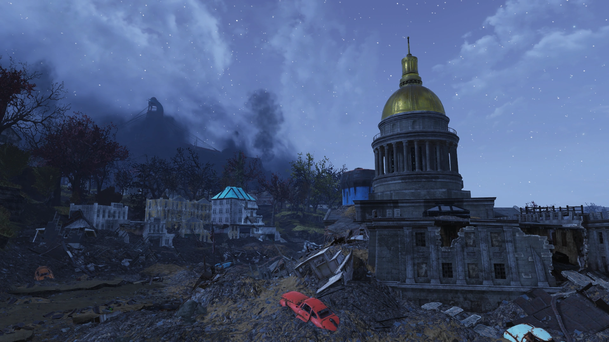
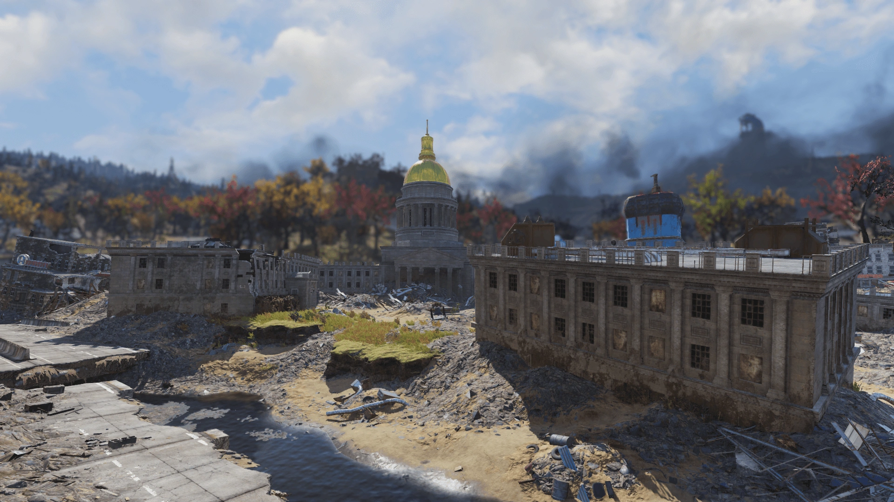
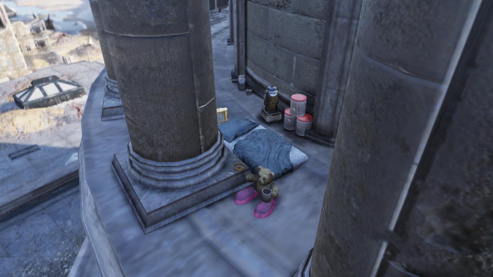
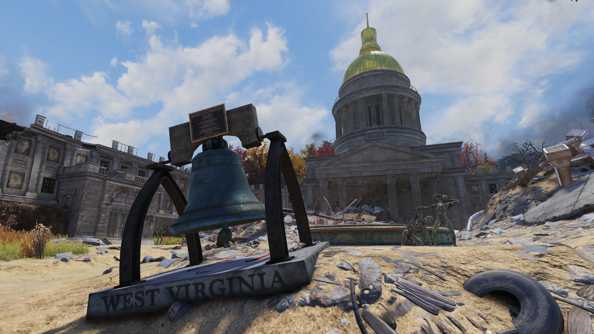
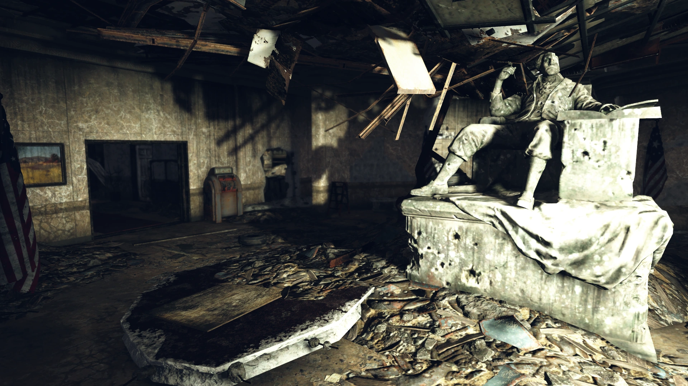
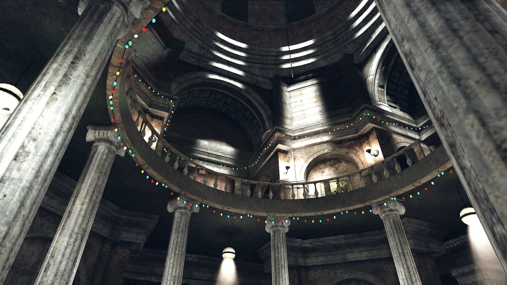
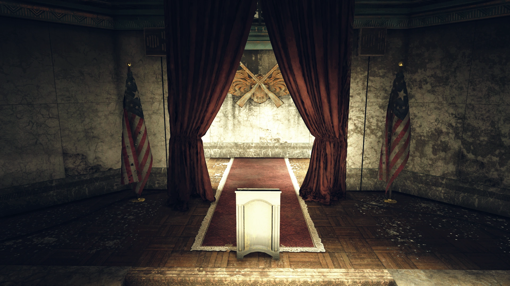
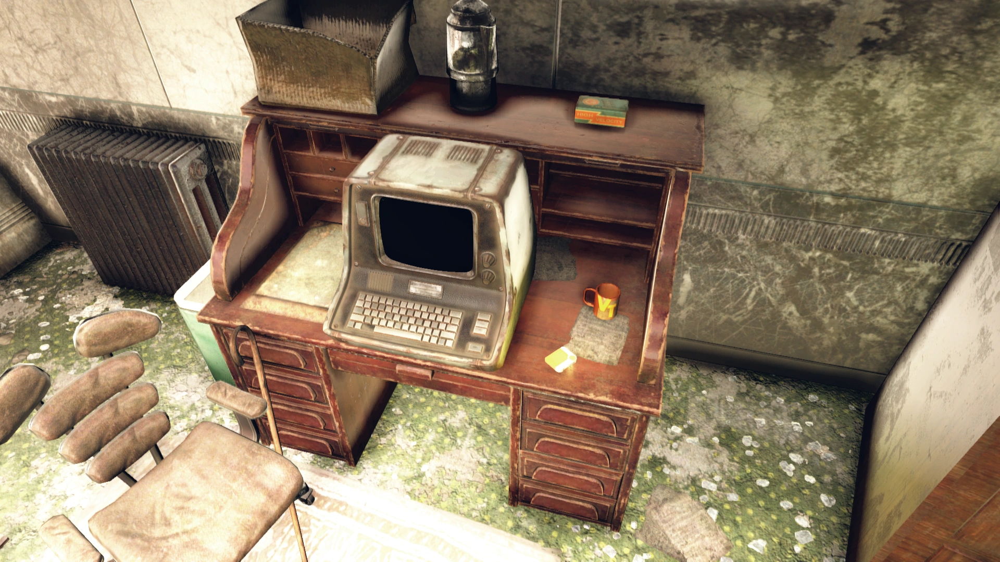
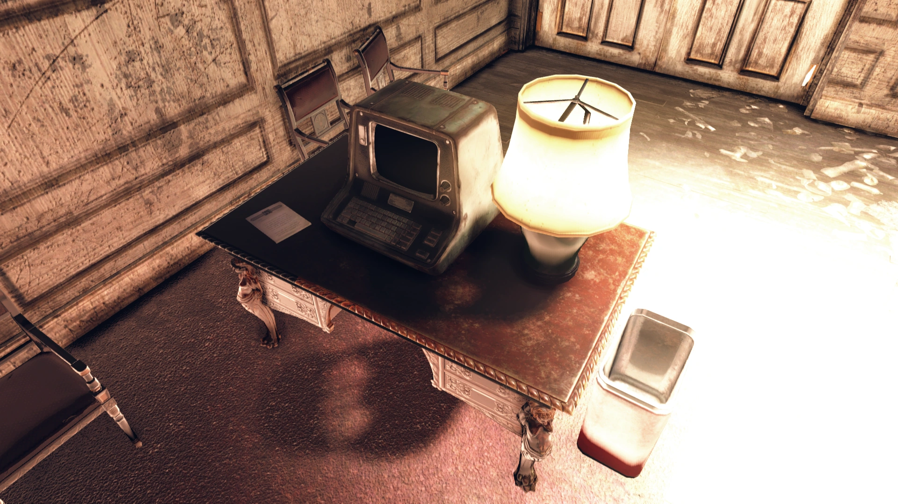
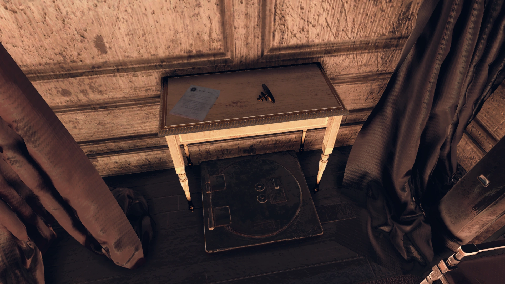
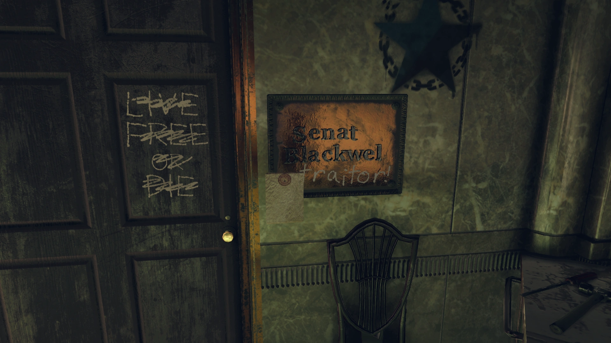
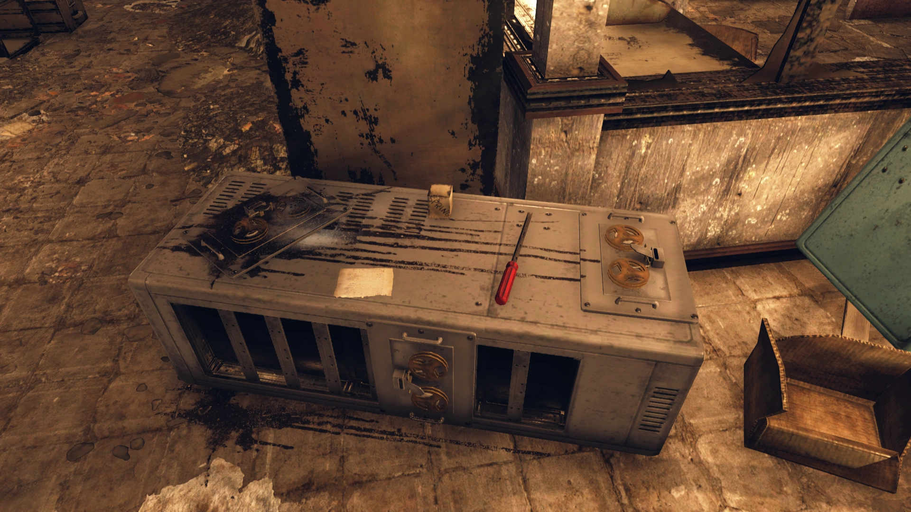
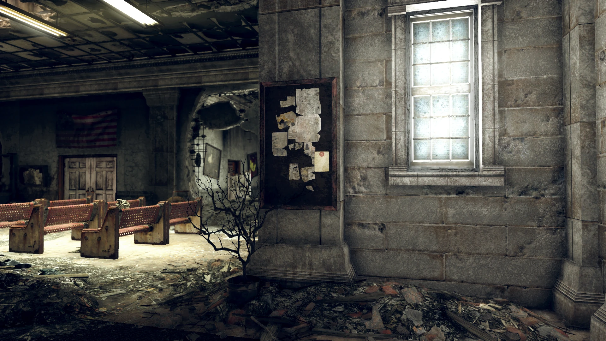
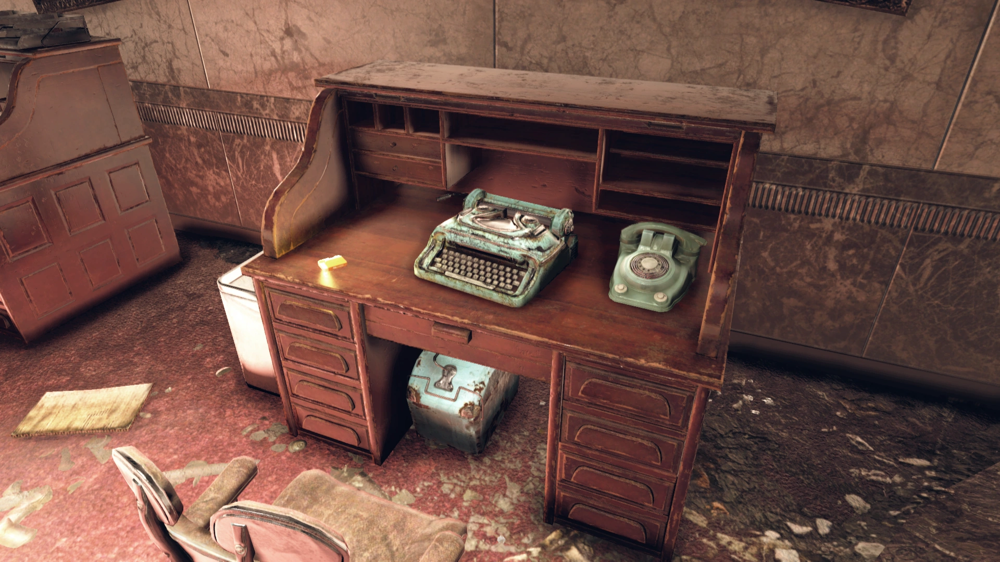
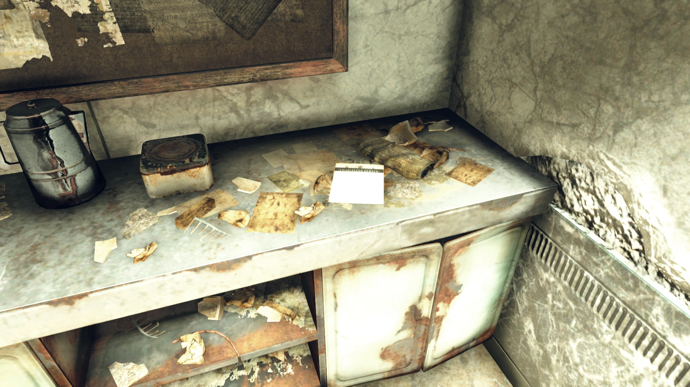
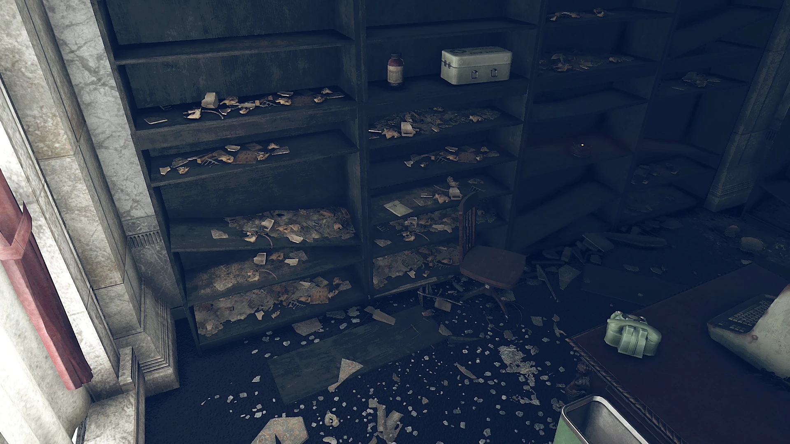
議事堂ビルはFallout 76の中でも特にストーリーの厚いロケーションです。
プール議長とホルブルックの口論を録音したクリスマスプランのホロテープは、終末後の政治ドラマとして最高の出来。
「いい子にしてたらサンタの衣装を着せてあげてもいいわ」——プール議長のこの鷹揚さと同時に見せる鋭い政治感覚が魅力的です。
大統領からの手紙も味わい深い。アンカレッジ解放への謝辞に続く「反対意見の迅速な鎮圧に賞賛」という一文には、Fallout世界のアメリカのダークサイドが凝縮されています。
「ディ-」で途切れた署名が誰なのか、想像を掻き立てられますね。
ホーンライト家からの手紙は、大企業が政治家を公然と脅迫するFallout世界の日常を端的に示しています。
現実のウェストバージニア州議事堂の金箔ドームが合衆国議事堂より高いという事実を知ると、ゲーム内の廃墟が一層感慨深く見えてきます。
This article was created by translating and editing Charleston Capitol Building from Nukapedia: The Fallout Wiki.
Licensed under the Creative Commons Attribution-Share Alike License (CC BY-SA 3.0).
コミュニティ維持のため、寄付を受け付けております。
> COMMENTS